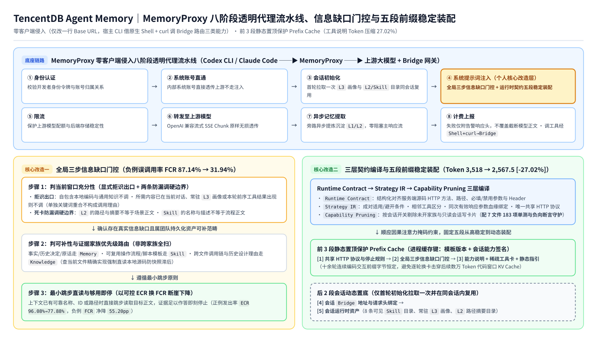
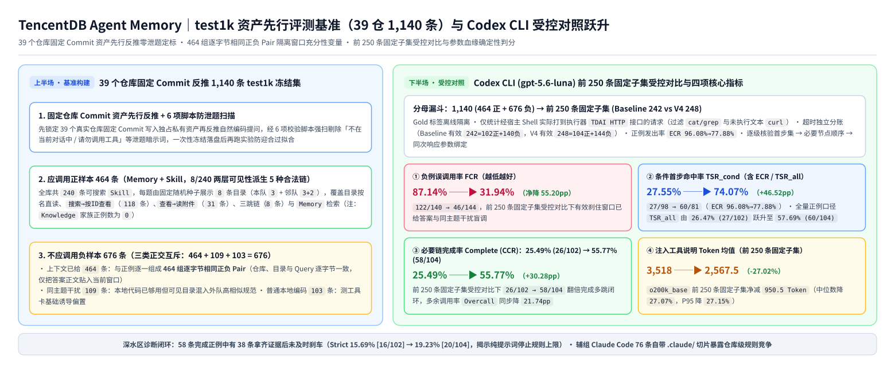

TencentDB Agent Memory · 开源经历面试精炼手册
腾讯犀牛鸟开源人才优秀学生项目：清晰划定透明代理底座与个人独立负责的第 4 阶段提示词注入层及 test1k 评测体系，完整覆盖信息缺口门控、三层契约编译器与固定五段 Prefix Cache 装配、39 仓 1,140 条正负配对基准及真实 CLI 五级确定性轨迹漏斗。
面试语气与三遍刷本心法（点击可收起）
- 手册定位：面向简历开源经历的单文件脱稿主背手册。清晰切分项目既有底座（
MemoryProxy / Bridge / MemoryCore）与我独立负责的第 4 阶段提示词注入层及test1k评测体系，并交代实验边界。 - 去书面腔 4 条铁律：
- ① 先抛核心洞察（如「误调高达 87% 不是模型笨，是把主题相关当成了缺信息」），再展开改造；② 数据主动拆双口径，报完亮点主动带一句权衡代价（
ECR回落 18.20pp、Knowledge正例为 0、未做单变量消融、尚未改Bridge），比等面试官揪出来显得专业十倍；③ 主动丢互动钩子（如「这块可以往下拆门控设计，也可以聊为什么Complete翻倍但Strict没涨的辛普森效应，您想先听哪块？」）；④ 三遍刷本：X.0懂原理+折叠自测 →X.1口语脱稿 →X.2/X.3选型与连环追问。
00零、定稿简历原文、透明代理底座与脱稿开场口述
- 头衔与时间：TencentDB Agent Memory｜腾讯犀牛鸟开源人才优秀学生 2026.08 - 2026.09
- 项目简介：面向编码 Agent 的长期记忆开源项目，通过 MemoryProxy 向模型注入 Memory / Skill / Knowledge 三类工具能力，覆盖团队记忆检索、技能加载与跨文件知识问答。
- 个人贡献：针对关键词触发误调用率高与工具说明 Token 冗余问题，参与 Proxy 系统提示词注入优化，以信息缺口门控替代关键词触发，并按运行时契约生成工具卡；构建覆盖 39 个仓库、1,140 条正负样本的 Agent 工具调用评测基准与受控对照实验框架，围绕误调用率、首步命中率及必要链完成率进行定量评估。Codex CLI 上，误调用率由 87.14% 降至 31.94%，首步命中率由 27.55% 提升至 74.07%，必要链完成率由 25.49% 提升至 55.77%，工具说明 Token 压缩 27.02%。
- 简历写参与、口述讲负责的边界：整个项目由社区维护者主导，所以简历写参与。我独立负责的范围是
MemoryProxy第 4 阶段提示词注入层和test1k评测目录这两块，存储、路由和其他阶段是项目原有的，我没有改。结果是两个服务版本的整体对照，没有拆单项贡献。 - 项目既有透明代理底座与我的职责边界：
- 项目原有零侵入交互底座：开发者无需改动
Codex CLI或Claude Code源码、也无需本地配 MCP，只需把模型 Base URL 指向项目既有的无状态透明代理MemoryProxy。单次主模型请求依次经过八阶段流水线：1. 身份认证 → 2. 系统账号直通 → 3. 会话初始化 → 4. 系统提示词注入 → 5. 限流 → 6. 转发至上游模型 → 7. 异步记忆提取 → 8. 计费上报。其中系统账号直通直接透传不走注入，会话初始化仅在首轮拉取一次L3画像与L2 / Skill目录并在同会话复用。第4阶段系统提示词注入是我独立负责的核心改造层，第8阶段计费异常仅追加响应头而不覆盖模型回答。模型需查外部资产时借宿主 CLI 原生自带的Shell执行curl打向既有Bridge网关，由Bridge代填认证凭据路由至后端MemoryCore、Skill与MemoryKnowledge服务。 - 既有四层记忆粒度与三类工具契约（我将其固化进运行时契约工具卡）：
| 既有资产 / 工具家族 | 存储粒度与驻留方式 | 职责边界与关键调用契约 |
|---|---|---|
L0–L3 四层记忆 | L0 原始对话（按需查），L1 异步提炼的事实偏好约束（按需查），L2 项目场景层（首轮仅常驻路径加摘要），L3 长期画像（短且稳定，整段常驻）。 | 早期每轮自动检索拼入用户消息因改动前缀打碎 Prefix Cache 已下线，改为常驻极短目录加按需拉正文。 |
Memory（记忆检索） | 细分记忆检索（查事实结论与团队约定）、对话检索（查 L0 原话与时间线）、按条件精确查询（带类型时间分页）、直读 L2 场景正文。 | 返回携带不完整标记（部分子源未查全）时，必须如实声明覆盖不全，不得断言团队无此约定。 |
Skill（技能加载） | 首轮注入可见目录（名称加简述）→ 按名称或搜索后按 ID 查看正文与附件清单 → 按需读取脚本或模板附件。 | 三级渐进加载，读附件必须绑定同一次有效查看响应返回的 Skill ID + 版本号 + 附件路径，禁止跨响应拼接参数或凭猜测填写。 |
Knowledge（知识问答） | 对接团队 Wiki 与代码调用图谱，走 tools/list → tools/call 动态两步发现协议（会话内缓存列表，参数报错时重拉）。 | 仅查跨文件调用链（explore / node / callers / callees / impact）与设计理由。查当前文件精确实现须直读本地源码，外层成功但内层错误布尔标记为真时仍按失败读取错误文本。 |
- 项目介绍口述（约 45 秒，自然对谈版）：
「这是我参与腾讯犀牛鸟开源人才计划做的编码 Agent 长期记忆项目，核心是在不改
Codex CLI或Claude Code一行源码的前提下，靠无状态透明代理MemoryProxy注入系统提示词，让模型借原生Shell + curl按需调团队记忆、技能和知识库。我接手时项目主要存在两个突出问题：一是原版靠关键词强触发，哪怕答案已经贴在窗口里，负例误调用率仍高达
87.14%；二是手写说明超3,500Token、相邻工具边界不清，多跳经常拼错参数断链。我独立负责了第
4阶段注入层和39仓1,140条test1k正负配对评测基准：用三步信息缺口门控换掉关键词触发，按运行时契约三层编译工具卡并固定五段前缀。在 Codex CLI 对照上，误调用压到31.94%，首步命中率从27.55%提至74.07%，必要链完成率从25.49%提至55.77%，工具说明压缩27.02%。面试官，您更想先聊门控和工具卡怎么保前缀缓存，还是
test1k基准和辛普森效应归因？」
01一、信息缺口门控替代关键词触发（核心改造一：压降高误调用）
对应简历关键词针对关键词触发误调用率高，参与 Proxy 系统提示词注入优化，以信息缺口门控替代关键词触发。Codex CLI 上，误调用率由 87.14% 降至 31.94%。

先懂再背1.0 设计推演速懂（先懂再背）
先拆简历原句 & 点破易踩坑：
先认清整套系统的位置：开发者不改 Codex CLI / Claude Code 一行源码，只把 API Base URL 指向无状态透明代理 MemoryProxy（8 阶段流水线，你独立负责第 4 阶段系统提示词注入与 test1k 评测），模型需要查团队资产时借宿主原生 Shell + curl 调 Bridge 网关。
- 易踩坑预警 1（核心认知转折）：原版误调用率高达
87.14%（122/140），根本原因不是模型笨，而是原版把“主题相关（词面重合）”当成了调用条件！编码时用户问“按规范改命名”，哪怕答案已经贴在当前窗口里，关键词触发器照样逼它调接口。改造的本质是把触发条件从“关键词重合”切换为“当前窗口是否缺少作答证据（信息缺口）”。 - 易踩坑预警 2（主动交代权衡）：门控收紧把误调用
FCR净压降55.20pp（87.14% → 31.94%），伴随正例发出率ECR由96.08%（98/102）回落至77.88%（81/104）（-18.20pp），这是召回换精度的工程权衡，汇报时必须主动说透。
一图看懂：透明代理八阶段定位 & 全局三步信息缺口门控流
车祸现场推演：每一步为什么被迫这么设计？
- 车祸 1（单向正向强制句 + 关键词重合 → 窗口已有答案仍 87.14% 狂调接口）→ 主模型全局三步门控 + 成对正负边界
- 不加它怎么炸：原版每个工具段落各自堆砌“遇到规范/命名/配置务必调用 XXX”且没有拒识出口。结果就像 Unity 命名规范的正负配对题——两题提问逐字节一模一样，负例窗口里明明已经贴出了
Forest Spirit / Evil Spirits正文，原版仍 87.14% 触发远程检索。 - 怎么设计：在全部工具卡之前抽离全局三步信息缺口门控，第一步先给显式拒识出口（明确“单凭关键词重合不构成调用理由”），并在每张工具卡成对写明「适用条件 + 避开条件」；同时死锁两条防漏调硬边界（
L2路径摘要 ≠ 正文、Skill名称简述 ≠ 正文），防止模型扫一眼目录就自以为够用而瞎编。
- 车祸 2（为什么不在 Proxy 前置挂一个 Embedding 路由器或 7B 小模型硬拦截？）→ 视野与延迟的双重死结
- 不加它/硬上它怎么炸：
- Embedding 向量路由：算的还是“问题和工具的主题相似度”，根本判断不了当前窗口里有没有答案，在
109条同主题外队干扰和464条窗口已给 Pair 上全军覆没； - 前置 7B 小模型分类器：如果只传最后一句提问，一样看不到窗口里的代码和历史；如果把几万 Token 本地代码全传给小模型，每轮白多一跳长上下文 Prefill 延迟与成本，而且小模型看不到主模型同轮第 2、3 步刚拿回来的工具
Observation！
- 怎么设计：直接复用已经握有完整代码窗口与实时工具返回的主模型做门控，零额外网络往返延迟、视野最全。
- 车祸 3（为什么不走标准 Function Calling / MCP 而让模型拼
Shell + curl？）→ 透明代理零侵入的最大公约数- 不加它怎么炸：透明代理承诺“多种第三方 CLI 只改一行 Base URL 即用”。如果 Proxy 擅自在请求体里塞自定义
tools函数声明，上游模型吐出自定义tool_call后，客户端本地根本没注册对应处理函数，当场报错中断会话！ - 怎么设计：所有编码终端 CLI 都原生自带
Shell工具，让模型借原生Shell + curl打向既有Bridge网关（由Bridge代填后端鉴权凭据）是零客户端改造的通用解法；正因无原生 Schema，才引出了下一章的「运行时契约三层编译工具卡」。
实况举例（全组件联动：Codex CLI ↔ MemoryProxy ↔ 上游模型 ↔ Bridge 网关 ↔ MemoryCore/Skill）
全链路协同：Codex CLI 发出请求 → MemoryProxy 第 3/4 阶段首轮拉取 L3/L2/Skill 目录并注入三步门控后转发上游主模型 → 仅当判缺证据时模型借宿主 Shell + curl 打向 Bridge 网关（代填凭据鉴权）路由至 MemoryCore / Skill（详细 4 方案对比见下方 1.2 选型表）：
| 样本类型 | 用户提问（完全相同或高度同主题） | 当前对话窗口现状 | Baseline（关键词触发）vs V4（信息缺口门控） |
|---|---|---|---|
| 正例（应调） | 「按团队内部规范命名 Unity prefab、Tag 和脚本，禁用课程外部标签」 | 窗口仅提到“以前有人问过命名”，无具体名称（正文藏在后端 MemoryCore L1） | Baseline：调用（正确） / V4：判窗口缺证据 → 借 Shell+curl 经 Bridge 查 MemoryCore（正确） |
| 配对负例（不该调） | 提问逐字节一模一样 | 窗口已完整贴出 Forest Spirit / Evil Spirits 规范正文 | Baseline：见“规范/命名”词仍经 Bridge 狂调（87.14% 误调根源）/ V4：首步判窗口充分 → 显式拒识不碰 Bridge（正确） |
| 目录防漏调边界例 | 「按团队发版流程执行发布前检查脚本」 | MemoryProxy 首轮注入的 Skill 目录仅有名称和一句简述（无步骤正文） | V4 硬边界生效：Skill 简述 ≠ 流程正文 → 放行经 Bridge 按名称读取 Skill 正文（正确） |
为什么选它：各方案优劣与我的代价权衡（详表见下方 1.2）
| 对比方案 | 优点（适合什么场景） | 缺点与底层原因（为什么会踩坑） | 我的方案与愿意付的代价 |
|---|---|---|---|
| 关键词规则 / Embedding 路由 / 前置 7B 小模型 vs 主模型信息缺口门控 | 关键词/Embedding 延迟极低、适合“主题互斥”路由；前置 7B 分类器模块解耦、便于独立硬拦截 | 编码痛点不是主题相关而是窗口缺不缺证据，前两者看不到窗口已有答案；前置 7B 传几万 Token 本地代码每轮白多一跳长 Prefill 延迟，且看不到主模型同轮后续步拿回的新 Observation | 选主模型三步信息缺口门控（+ 宿主 Shell+curl）：愿付正例发出率 ECR 回落 18.20pp（召回换精度）与软约束需配合契约单测的代价，换取零额外延迟、零改造第三方 CLI 与误调用暴降 55.20pp |
- 为什么 Embedding 语义路由和 Proxy 前置 7B 小模型分类器都解决不了这
87.14%的高误调用？ - 既然目录里注入了
L2摘要和Skill名称简述，怎么防止模型看一眼目录觉得够了就拒识漏调？门控收紧后付出了什么量化代价？ - 为什么不改用标准 Function Calling 或 MCP，而要让模型走
Shell + curl？Proxy 转发流式 SSE 时怎么保证旁路记忆提取和计费报错不打断用户会话？
点击核对核心采分点（先自己脱稿讲一遍再点开）
- 视野与延迟死结：Embedding 算的是主题相似度而非窗口缺不缺证据，在 464 条窗口已给 Pair 和 109 条外队干扰上全失效；前置 7B 小模型只看最后一句话没用，全传几万 Token 本地代码又每轮多一跳长 Prefill 延迟，且看不到主模型同轮后续步新拿回的
Observation。 - 两条防漏调硬边界 & 权衡代价：在门控第一步写死「
L2路径摘要 ≠ 场景正文、Skill名称简述 ≠ 流程正文」，目录只作线索，出现具体规则步骤正文才准拒识；代价是正例发出率ECR由96.08%(98/102)回落至77.88%(81/104)（-18.20pp），属召回换精度。 - 零侵入最大公约数 & 无损透传：多种第三方 CLI 只改一行 Base URL 接入，Proxy 塞自定义函数声明会让客户端因本地未注册直接报错，而终端 CLI 均原生自带
Shell；Proxy 仅在第 4 阶段改写系统提示词，上游 SSE 原样透传，第 7 阶段记忆提取异步旁路，第 8 阶段计费异常只追响应头。
脱稿口述1.1 30 秒速答与 90 秒 STAR
- 30 秒速答（先抛洞察 + 拆三步 + 抛钩子）：
「原版负例误调用高达
87.14%，根因不是模型笨，而是把『主题相关』错当成了『缺少证据』。我没在 Proxy 里挂会拖慢延迟、视野又不全的前置小模型，而是直接复用握有完整代码窗口的主模型，在所有工具卡前抽了一层全局三步信息缺口门控：① 先判窗口充分性并写死“目录摘要不等于正文”防漏调；② 再按证据类型优先级路由家族；③ 最小跳步、够用即停。
最终误调用降到了
31.94%（同时主动权衡了正例发出率回落18.20pp）。您想听听为什么不用前置 7B 分类器，还是零侵入下为什么走Shell + curl？」 - 90 秒完整 STAR：
- S（背景与痛点）：原版注入提示词在负例上误调用率高达
87.14%（122/140）。根因是各工具段单向堆砌正向强制句且没给拒识出口，而改代码提问和团队规范词面高度重合，哪怕答案已经贴在对话、常驻L3画像或前序工具结果里，模型仍会白调远程接口。 - T（技术目标）：在不改客户端、不增加前置小模型网络往返延迟的前提下，建立感知当前上下文充分性的显式拒识门控，把无效调用大幅压下来。
- A（核心做法与钩子）：直接复用握有完整窗口与实时
Observation的主模型，在全部工具卡前抽离全局三步信息缺口门控（前置分类器的局限见 1.2 方案 C）：① 先判窗口充分性并锁定“目录不等于正文”两条防漏调硬边界；② 按证据类型优先级路由家族；③ 最小跳步、够用即停，并在每张工具卡成对写明适用与避开条件。 - R（量化结果与边界）：在
Codex CLI前250条受控对照中，有效负例误调用率FCR从87.14%（122/140）降至31.94%（46/144）（净降55.20pp）；同时坦诚交代这是以正例发出率ECR回落18.20pp（96.08% → 77.88%）换取的精度收益。
核心机制1.2 关键方案选型对比表与核心契约记忆桩
| 候选方案 | 核心痛点与代价 | 淘汰 / 最终选择原因 |
|---|---|---|
| 方案 A：关键词匹配 / 单向正向强规则触发（Baseline） | 零延迟，但只认 Query 字面词（如规范、命名），看不到窗口已有证据，同题正负配对必错一端。 | 无窗口状态感知致 87.14% 误调用，淘汰。 |
| 方案 B：Embedding 向量语义相似度路由 | 可处理同义改写，但算的仍是主题相关性，判断不了当前窗口缺不缺证据，在 109 条同主题干扰负例下极易误触发。 | 混淆主题相关与信息缺失，淘汰。 |
| 方案 C：Proxy 层前置独立小模型分类器 / Router LLM | 模块解耦，但每轮增加一跳长上下文 Prefill 延迟与成本，且看不到主模型同轮后续步新拿到的 Observation。 | 延迟重传成本高且多步视野割裂，淘汰。 |
| 方案 D：主模型全局信息缺口门控 + 成对正负边界（最终选择） | 复用握有完整窗口与实时工具返回的主模型，零额外调用开销，将判断准则切换为当前窗口是否缺少作答证据。 | 零额外延迟且上下文视野最完整，最终采用。 |
- 全局三步充分性决策链与两条防漏调硬边界：① 判窗口充分性（显式拒识出口）：自包含编码与通用知识不调，所需内容已在当前对话、常驻
L3画像或本轮前序工具结果中出现则不调，单独关键词重合不构成调用理由。同时明确固定两条硬边界——L2的路径与摘要不等于场景正文，Skill的名称与描述不等于流程正文，防止模型看一眼目录摘要就误判够用而漏调。② 判可补性与证据优先级路由：事实约定原话走Memory，可复用步骤模板走Skill，跨文件关系与设计理由走Knowledge（属优先级路由而非跨家族全扫一遍）。③ 判最小跳步与停止：已有可靠名称、ID 或路径直接跳至读取动作，证据足以作答即停止。 - 正负配对实战案例与召回换精度防守口径：以 Unity 命名规范正负 Pair 为例，两题用户 Query 逐字节一致（询问项目内 prefab、Tag 与脚本内部命名且禁用课程外部标签）。正例窗口仅提及之前有人问过命名，内部名称仅存于
L1 Memory，门控放行检索。配对负例窗口已贴出Forest Spirit与Evil Spirits正文，门控首步识别窗口充分直接拒识。门控收紧后正例发出率ECR由96.08%（98/102）回落至77.88%（81/104）（降18.20pp），面试汇报时主动坦诚这一召回换精度的工程权衡。
高频追问1.3 面试官高频连环追问与脱稿答辩（Q1–Q3）
Q1 ★★★（协议选型与无损透传拷问）：为什么非要改系统提示词让模型拼 Shell + curl，不直接用标准 Function Calling 或 MCP？Proxy 转发流式 SSE 怎么防止中断会话？
面试官发问：「现在主流 Agent 都走标准 Function Calling 或 MCP，为什么要在 Proxy 里注入系统提示词让模型调 Shell 发 curl？另外 Proxy 夹在 CLI 和上游模型中间，流式 SSE 转发和旁路报错时怎么保证不中断用户的编码会话？」
- 脱稿答辩：
「这由透明代理的零侵入前提决定。
① 协议取最大公约数：产品要求开发者在
Codex CLI、Claude Code等多种第三方终端上只改一行 API Base URL 即可零配置接入。若 Proxy 往请求体塞自定义函数结构，客户端收到上游工具调用指令时因本地未注册处理函数会直接报错中断，而终端 Agent 均原生自带Shell，借Shell + curl调Bridge是零客户端改造的通用解法，我也因此设计了运行时契约工具卡来补齐参数格式约束。② 流式透传与旁路故障隔离：
MemoryProxy只在请求发往上游前的第4阶段改写系统提示词，上游返回的 SSE 流式分块全程原样透传，第7阶段记忆提取走异步旁路不阻塞主响应，第8阶段计费异常只追加响应头，不截断、不改写模型正文。」
Q2 ★★★（门控形态二阶拷问）：把信息缺口门控写在 System Prompt 里终归是软约束，为什么不在 Proxy 层挂个 7B 小模型硬拦截？怎么防模型拿目录摘要当正文漏调？
面试官发问：「提示词门控终归靠主模型自觉，为什么不在 Proxy 前置跑一个轻量分类器或 7B 小模型决定要不要注入工具？还有注入区带了 L2 摘要和 Skill 描述，主模型会不会看一眼摘要觉得够了就自行编造？」
- 脱稿答辩：
「我权衡过前置小模型方案，核心卡在视野与延迟。
① 编码长窗口下前置小模型既加延迟又缺视野：判断缺不缺证据不能只看最后一句提问，必须通读窗口内几万 Token 本地代码、历史对话及同轮前序工具刚返回的观察结果。前置小模型若只看提问会退化成换壳语义路由并在
464条上下文已给负例上失效，全传几万 Token 则每轮多一跳长上下文预填充延迟，且看不到主模型同轮多步循环内动态拿回的新证据。② 两条硬边界阻断拿目录当正文漏调：我在全局门控第一步显式写死『
L2路径摘要不等于场景正文、Skill名称简述不等于流程正文』，规定目录仅作线索，窗口内已出现具体规则或步骤正文才准拒识。V4 有效正例发出率仍有77.88%（81/104），相对 Baseline 回落18.20个百分点，是门控收紧后的召回代价，不能单独证明硬边界没有漏调。」
Q3 ★★★（跨项目机制辨析拷问）：这段经历里的门控、记忆分层与工具契约，和个人项目 NoteWeave 里的同名设计有什么本质区别？
面试官发问：「你的个人项目 NoteWeave 也做了长期 Memory 门控和 SKILL.md + MCP 工具体系，为什么两边设计差异这么大？」
- 脱稿答辩：两套设计所处的链路位置与宿主控制权互相正交，具体差异体现在三个维度：
| 对比维度 | TencentDB Agent Memory（编码透明代理） | NoteWeave（自研 AI 资料研究工作台） |
|---|---|---|
| 门控位置与目标 | 读取侧·信息缺口门控：发请求前判当前窗口是否已充分，防无意义远程检索拖慢终端编码交互。 | 写入侧·长期记忆晋升门控：仅从数据围栏用户消息抽 8 类表达槽位，过四道门控才生效，防对话猜测污染资料事实。 |
| 记忆分层维度 | 按抽象沉淀粒度分 L0（原话）→ L1（事实偏好）→ L2（项目场景目录加正文）→ L3（常驻画像）。 | 按作用范围与可信度隔离：会话内按话题折叠与增量摘要、跨会话仅存表达偏好、事实每轮从资料重检 Evidence。 |
| 工具协议形态 | 零侵入 Shell + curl + 运行时契约工具卡：受限于不改第三方 CLI，靠三层编译卡片弥补无原生 Schema。 | 独立 MCP 服务 + 五段 SKILL.md + JSON Schema：自控前后端，将音视频转写与关键帧理解两个重依赖工具拆为独立 MCP 服务按需扩缩容。 |
02二、按运行时契约生成工具卡与五段前缀稳定装配（核心改造二：压降冗余与提准首步）
对应简历关键词针对工具说明 Token 冗余问题，按运行时契约生成工具卡。Codex CLI 上，首步命中率由 27.55% 提升至 74.07%，工具说明 Token 压缩 27.02%。
先懂再背2.0 设计推演速懂（先懂再背）
先拆简历原句 & 点破易踩坑：
走 Shell + curl 最大的隐患是缺少原生 Schema 约束：原版靠手写长篇 Markdown 说明，结果又肥（均值 3,518.0 Token，连未开启的写卡片都全塞进去）、又易与服务端代码漂移、还常因相邻工具边界不清和跨响应拼参导致首步选错（仅 27.55%）或附件 4xx 断链。本章用三层解耦编译器 + 固定五段前缀装配 + 183 项单测（含负向断言）一举解决。
- 易踩坑预警 1（Prefix Cache 经济学）：千万别觉得“每轮动态检索只塞 1~2 张工具卡能省 80% Token 更好”！编码会话动辄 10~20 轮、挂着几万 Token 本地源码，受 Transformer 单向因果掩码限制，排在最前面的系统提示词只要每轮换一张卡，后面几万 Token 的
KV Cache就会整段失效重算！ - 易踩坑预警 2（防“缩分母刷分”质疑）：报条件首步命中率
TSR_cond（27.55% [27/98] → 74.07% [60/81]）时，必须同时报全量口径TSR_all（26.47% [27/102] → 57.69% [60/104]）——就算把所有漏调正例全判错，命中绝对题数依然从27涨到60！（且明确TSR_all = ECR × TSR_cond仅是分母约分恒等式，不是消融拆分）。
一图看懂：三层契约编译器 & 固定五段 Prefix Cache 稳定装配
车祸现场推演：每一步为什么被迫这么设计？
- 车祸 1（手写长散文越改越飘 + 删字压缩把关键防错约束剪丢了）→ 三层解耦 + 183 项负向断言单测
- 不加它怎么炸：服务端改了一个必填头或禁用参数，手写散文根本同步不过来；而且三类工具家族各写一遍 HTTP 错误处理极度冗余；如果人工删减字数，一不小心把“读 Skill 附件必须绑同次查看响应返回的 ID+版本号+路径”或“Knowledge 外层 200 但内层错误布尔为真仍按失败处理”删掉了，线上立刻大面积
4xx断链。 - 怎么设计：把“接口客观长啥样（
Runtime Contract）”、“业务策略边界与跨步血缘（Strategy IR）”、“本次会话渲染哪些卡（Capability Pruning）”彻底拆成三层；配套7个文件183项单测，专门写负向断言测试——故意删改关键限制词时校验器必须报错拦住，确保压缩只砍废话、不丢安全约束。
- 车祸 2（贪图单轮动态换卡省 Token，结果把几万 Token 源码缓存全打碎）→ 会话级裁剪 + 固定五段前 3 段置顶
- 不加它怎么炸：项目早期每轮自动召回记忆拼进用户消息前缀，结果每次都改动前缀把上游
Prefix Cache打碎，延迟和算力反而暴涨才下线；如果按每轮 Query 动态只塞 1~2 张工具卡，会在十几轮编码对话里把前 500 Token 改来改去，重蹈整段源码重算覆辙。 - 怎么设计：放弃逐轮动态换卡，改为会话级能力裁剪 + 前三段静态前缀置顶缓存，后两段动态资产放最底。这样既一次性砍掉
27.02%常驻冗余，又在架构上创造了跨轮次前缀缓存命中前提（闭源服务商未暴露缓存命中计数器，只报实测 Token 压缩率，绝不虚报缓存命中率与 TTFT）。
- 车祸 3（只读模式藏起写工具卡能防提示注入吗？仓库自带
.claude/会打架吗？）→ 服务端 403 硬鉴权 + 仓库规则二分实测- 不加它怎么炸：模型遇提示注入完全可能自己手拼一条写接口
curl；且用户代码库若自带.claude/指令文件，宿主 CLI 自动加载后可能和代理注入的门控抢优先级。 - 怎么设计：明确提示词裁剪不当作安全防线，客户端本地不含后端存储凭据，所有
curl经Bridge转MemoryCore服务端按会话令牌验账号归属和读写权限，越权直返403；同时用辅组Claude Code CLI250 条的二分切片实证规则竞争（无.claude/174 条FCR降19.42pp，含.claude/3 仓 76 条仅降2.44pp、完成率反降5.71pp）。
补充示意图 & 实况举例（工具卡重构前后对比 + 热门大模型八股：Transformer Causal Mask 与 Prefix Cache）
| 对比维度 | Baseline（手写长篇 Markdown，均值 3,518.0 Token） | V4（三层编译稀疏工具卡，均值 2,567.5 Token，-27.02%） |
|---|---|---|
| 接口与协议冗余 | Memory/Skill/Knowledge 三段各自重复写一遍 curl 重试与报错处理，只读会话照塞写接口卡片 | 顶层抽离唯一共享 HTTP 协议（4xx 禁重试、5xx 最多 1 次）；只读会话整组裁剪写卡 |
| 相邻工具与多跳防断链 | 边界模糊，读附件常手猜路径或跨响应拼旧版本号报 4xx（首步命中仅 27.55%） | 明写相邻工具区分（查结论/查原话/精确过滤/直读 L2）+ 强锁同次成功响应的 Skill ID + version + path（首步飙升至 74.07%，配 183 项负向断言单测防删丢约束） |
为什么选它：各方案优劣与我的代价权衡（详表见下方 2.2）
| 对比方案 | 优点（适合什么场景） | 缺点与底层原因（为什么会踩坑） | 我的方案与愿意付的代价 |
|---|---|---|---|
| 原生 FC/MCP / 手写长散文 / 逐轮动态选卡 vs 三层契约编译 + 固定五段 | 原生 FC/MCP Schema 强校验（自控全栈时首选，如 NoteWeave）；逐轮动态选 Top-2 卡单轮字面说明最短 | 侵入改 CLI 破坏零配置接入前提；手写散文易与源码漂移且冗余 3,518 Token；逐轮换卡因 Transformer 因果掩码击穿后面几万 Token 源码的 Prefix KV Cache 全量重算 | 选运行时契约三层编译 + 会话级固定五段装配：愿付单轮仍常驻 2,567.5 Token（只压缩 27.02% 而非 80%）与维护 183 项单测成本，换取多轮编码前缀恒定与首步命中升至 74.07% |
- 每轮动态挑最相关的 1~2 张工具卡不是能省 80% Token 吗？为什么你只压了 27.02% 坚持做会话级固定五段装配？
- 怎么向面试官证明把
3,518 Token压成2,567.5 Token的过程中，没有把关键参数约束和安全边界删丢？ - 汇报首步命中率
27.55% → 74.07%时，怎么用一句话彻底堵死“靠少发请求缩分母刷分”的质疑？
点击核对核心采分点（先自己脱稿讲一遍再点开）
- Prefix Cache 经济学：编码修跨文件 Bug 常跑 10~20 轮、窗口挂几万 Token 本地源码；受 Transformer 单向因果掩码限制，第 500 个 Token 处逐轮换卡会击穿后面整段源码的
KV Cache全量重算，延迟和成本反升；改为会话级能力裁剪 + 前 3 段静态置顶缓存（实事求是只报实测-27.02%Token，不虚报闭源缓存命中率）。 183项单测与负向断言：配套 7 个测试文件共183项单测，除源码参数对齐和共享协议单次出现检查外，专门写了故意删改版本号绑定、禁用参数等关键限制词并断言校验器必报错拦截的负向断言测试。- 双口径证伪缩分母刷分：同时报全量有效正例首步命中率
TSR_all（26.47% [27/102] → 57.69% [60/104]）——即便把所有漏调未发请求的正例全判错计入分母，命中绝对题数依然从27飙升至60（且明确TSR_all = ECR × TSR_cond仅是分母约分代数恒等式）。
脱稿口述2.1 30 秒速答与 90 秒 STAR
- 30 秒速答（先抛结论 + 拆三步 + 抛钩子）：
「手写长篇工具说明既费 Token（
3,518）又容易和服务端代码脱节，还老让模型首步选错或跨响应拼错附件版本报4xx。我做了一套三层契约编译器——底层对齐源码参数、中层定相邻工具边界与同次响应参数强绑定、顶层按会话裁剪并按前三段静态置顶的固定五段顺序渲染保
Prefix Cache，再配183项含负向断言的单测防删丢约束。最终说明压缩
27.02%，条件首步命中率从27.55%提至74.07%（全量口径也从26.47%提至57.69%）。您想先看为什么不做每轮动态选卡省 80%，还是183项负向单测怎么防退化？」 - 90 秒完整 STAR：
- S（背景与痛点）：原版手写 Markdown 在三类工具间重复堆砌协议，未开启的写卡片也照塞（均值
3,518.0 Token），服务端改参极易漂移；相邻工具边界模糊，多跳读附件常手猜路径或跨响应混拼版本号报4xx，发出后的首步命中率仅27.55%。 - T（技术目标）：消除说明与源码漂移，压缩冗余并保证十几轮编码对话里静态前缀逐字节恒定以护住
Prefix Cache，同时把首步选型与多跳参数绑定拉上来。 - A（核心做法与钩子）：设计了三层解耦编译器：
- ① 底层
Runtime Contract：对齐服务端源码登记路径、必填/禁用参数与请求头； - ② 中层
Strategy IR：声明成对适用避开、相邻工具区分、同次成功响应参数强绑定及唯一共享 HTTP 协议； - ③ 顶层
Capability Pruning+ 五段装配：按会话剔除未启用家族与写卡，前三段静态置顶缓存、后两段动态置底，配套7个文件共183项单测（含故意删改限制词必报错的负向断言）护航。
- R（量化结果与边界）：同批
250条工具说明从3,518.0降至2,567.5 Token（压缩27.02%）；条件首步命中率27.55%（27/98）→ 74.07%（60/81），全量口径同步从26.47%（27/102）→ 57.69%（60/104）（命中题数27 → 60，证伪缩分母刷分）。
核心机制2.2 关键方案选型对比表与核心契约记忆桩
| 候选方案 | 核心痛点与代价 | 淘汰 / 最终选择原因 |
|---|---|---|
| 方案 A：侵入改造各编码 CLI 原生 Function Calling / MCP | 原生 Schema 约束强，但破坏只改一行 Base URL 零配置接入多种 CLI 的前提，易与宿主内置工具冲突。 | 违背透明代理零侵入约束，淘汰。 |
| 方案 B：人工维护全量静态 Markdown 提示词 | 服务端演进后文档易脱节漂移，三家族重复写错误处理且渲染未启用写卡片，Token 严重冗余。 | 契约易漂移且 Token 膨胀，淘汰。 |
| 方案 C：按每轮 Query 动态向量检索只注入 Top-2 工具卡 | 单轮字面 Token 更少，但十余轮编码交互中系统提示词逐轮变化会使后续几万 Token 代码窗口 KV Cache 全失效重算。 | 打碎跨轮次 Prefix Cache 推高延迟，淘汰。 |
| 方案 D：运行时契约三层编译 + 会话级裁剪 + 固定五段装配（最终选择） | 参数单点对齐源码，按会话能力裁剪冗余并固定前三段静态前缀字节恒定。 | 兼顾防漂移、27.02% 降本与前缀缓存命中前提，最终采用。 |
- 三层解耦编译器核心契约：① 第 1 层
Runtime Contract（管客观能怎么调）：结构化登记 HTTP 方法、路径、必填参数、禁用参数、必需请求头、返回结构与服务端代码位置。② 第 2 层Strategy IR（管何时调与怎么接）：写明成对的适用条件与避开条件，以及相邻工具区分——查结论走记忆检索、查原话走对话检索、带过滤和分页走按条件精确查询、已知路径时直读L2场景正文，目录可见时按名称读 Skill、拿到 ID 后按 ID 读 Skill。同时强制同一次有效响应的参数绑定（必须取自上一步业务码成功的同一次响应），并抽离唯一的共享 HTTP 协议（4xx参数错误禁止重试，瞬时5xx最多重试1次）。③ 第 3 层Capability Pruning：未启用的工具家族整组不渲染，只读会话剔除全部写入和提取类工具卡。 - 固定五段
Prefix Cache装配与183项单测负向断言：受 Transformer 单向因果掩码（Causal Mask）限制，仅从第0个 Token 起字节一致的前缀可复用KV Cache。我固定按[1]共享协议与停止规则、[2]信息缺口门控、[3]能力说明加稀疏工具卡与静态指引、[4]会话地址与请求头绑定、[5]运行时动态资产（Skill 目录、L3、L2目录）拼装。前3段静态前缀置顶并按模板版本 + 会话能力签名做进程内缓存，后2段动态置底（此设计在架构上创造了 Prefix Cache 命中前提，未直读闭源服务商内部缓存计数器）。配套7个测试文件共183项单测与负向断言，具体校验项见 2.3 Q2。 - Token 与双口径边界：用
o200k_base分词器统计同批250条样本注入的工具说明（不含动态资产正文），均值由3518.0降至2567.5Token，压缩27.02%（中位数降27.07%、P95 降27.15%）。汇报条件口径TSR_cond（27.55% [27/98] → 74.07% [60/81]） 时，必须同时汇报全量口径TSR_all（26.47% [27/102] → 57.69% [60/104]）。两者满足恒等式TSR_all = ECR × TSR_cond，仅属分母约分代数关系，非因果消融拆解。
高频追问2.3 面试官高频连环追问与脱稿答辩（Q1–Q3）
Q1 ★★★（Prefix Cache 经济学拷问）：既然要省 Token，每轮按用户 Query 动态检索只塞最相关的 1～2 张工具卡能省 80%，为什么只压缩 27.02% 做会话级固定装配？
面试官发问：「工具说明压完还有 2567 Token，如果在 Proxy 里按每轮用户问题做一次毫秒级向量匹配，只把最相关的那张工具卡塞进系统提示词，单轮岂不是能压到 500 Token 以内？为什么不做逐轮动态裁剪？」
- 脱稿答辩：
「核心是权衡单轮字面节省与多轮几万 Token 代码窗口的前缀缓存复用。
① 逐轮换卡会击穿整段代码上下文缓存：编码 Agent 修跨文件缺陷常连发
10～20轮调用，窗口里挂着几万 Token 仓库源码与历史轨迹，推理引擎按块级前缀哈希匹配KV Cache且受单向因果掩码限制，一旦排在最前面的系统提示词在第500个 Token 处因逐轮换卡发生字节变动，紧随其后的几万 Token 源码缓存就会整段失效重算，导致首字延迟与真实算力反升，项目早期每轮自动召回记忆拼入前缀正是踩了这个坑才下线。② 会话级裁剪兼顾瘦身与前缀恒定：按会话能力裁剪并把前三段静态前缀置顶，进程缓存键绑定模板版本加会话能力签名，既一次性削减
27.02%常驻冗余，又保证同会话十几轮交互间静态前缀逐字节恒定（因上游闭源服务未暴露缓存命中计数器，实验只实测汇报 Token 降幅，不虚报缓存命中率与首字延迟）。」
Q2 ★★（编译器工程落地拷问）：按运行时契约生成工具卡在代码里具体输入输出是什么？压缩文案时怎么证明没把关键安全约束删丢？
面试官发问：「具体讲讲按运行时契约生成工具卡在代码里是怎么落地的，输入是什么、输出是什么？把长散文压成稀疏卡片时，怎么防止不小心漏掉某个重要限制导致线上调不通？」
- 脱稿答辩：
「我将原本混在长散文里的说明拆成了三层结构化管线加自动化测试护栏。
① 三层结构化输入与渲染输出：底层运行时契约字典对齐服务端源码，录入接口 HTTP 方法、路径、必填与禁用参数、必需请求头及返回类型，中层策略表示按槽位填入成对适用避开条件、相邻工具区分及跨步参数来源（例如强制读 Skill 附件的标识、版本号、路径取自同一次业务码成功的查看响应，且知识库接口外层成功但内层错误布尔标记为真时仍按失败读取错误文本），顶层按会话能力裁剪后套用固定五段模板渲染输出。
②
183项自动化单测与负向断言防退化：合入提交配套7个测试文件共183项单测，除参数对齐校验与共享协议单次出现断言外，我专门编写了故意删改版本号绑定、禁用参数等关键限制词并断言校验器必报错拦截的负向断言测试，从工程上保证只删冗余表述、不丢安全约束。」
Q3 ★★（读写安全与仓库级规则竞争拷问）：只靠提示词裁剪藏起写工具卡安全吗？透明代理注入会不会和仓库自带的 .claude/ 或 AGENTS.md 冲突？
面试官发问：「只读模式下只是没在提示词里渲染写操作卡片，如果模型遇到提示注入或幻觉自己拼了一条写接口 curl 怎么办？另外如果用户代码仓库里自带了 .claude/ 配置，会和注入的门控冲突吗？」- 脱稿答辩：
「这两点分别对应服务端账号归属核验与宿主规则优先级竞争。
① 安全边界由服务端网关强制把关：提示词裁剪和门控只负责省 Token 与减轻注意力负担，提示词裁剪不当作安全防线。宿主 CLI 本地不持后端存储凭据，所有
curl请求均经Bridge转发MemoryCore，服务端按会话令牌校验账号归属和读写范围，只读会话即便手拼写请求也会被网关返回403。② 二分切片实测印证仓库自带规则竞争：我在辅组
Claude Code CLI跑前250条对照时做过二分切片排查（174 + 76 = 250），不含.claude/的174条样本误调用正常大降19.42个百分点，而在3个自带.claude/目录的仓库共76条样本上误调用仅降2.44个百分点、完成率反降5.71个百分点，清晰揭示宿主自动加载的仓库级指令会与代理注入规则争夺优先级。」
03三、构建 test1k 工具调用评测基准（核心评测一：39 仓库 1,140 条正负配对）
对应简历关键词构建覆盖 39 个仓库、1,140 条正负样本的 Agent 工具调用评测基准。

先懂再背3.0 设计推演速懂（先懂再背）
先拆简历原句 & 点破易踩坑：
公开基准（如 BFCL V2）的拒识题只考“工具跟问题完全无关时不调”，根本测不出编码 Agent 最真实、最致命的场景——“团队私有规范确实存在且与当前问题高度同主题，但答案已经贴在当前对话/代码窗口里了，所以不该调！” 这就是自建 test1k（39 仓 1,140 条正负配对）的核心动机。
- 易踩坑预警 1（范围红线）：
464条正例只含Memory和Skill，Knowledge家族正例数为0！面试严禁说Knowledge在该基准上有定量提升。 - 易踩坑预警 2（四个真实分母）：全量冻结基准是
1,140条；受真实Codex CLI耗时限制（单条限时 8min、并发 5），受控对照按顺序截取了前250条做固定子集回归——剔除超时（Baseline 8 条、V4 2 条）后有效分母分别为242（102正 + 140负） 和248（104正 + 144负），Token 统计分母为同批250条。
一图看懂：固定 Commit 资产先行反推 + 逐字节正负 Pair 构造全景
车祸现场推演：每一步为什么被迫这么设计？
- 车祸 1（线上日志人工打标吵不完 + 让大模型读仓库出题疯狂泄题）→ 资产先行反推 + 逐字节 Pair
- 不加它怎么炸：线上日志脱敏重，人工对“窗口已经差不多了要不要再查一次求稳”标注分歧极大；而直接让大模型读代码库出题，模型动不动在正例里写“请查询团队记忆”、在负例里写“无需使用外部工具”，直接把考试变成了测指令顺从，毫无区分度！
- 怎么设计：先锁仓库 Commit 写入独占私有资产再反推问题（答案不在代码库里，必须查资产 → 铁正例）；再把同一段答案原样贴回窗口，提问一字不改（答案已在眼前，不该查 → 铁负例）。调与不调 100% 由客观信息物理位置决定，零主观争议，再过 3 项脚本扫描后一次性冻结。
- 车祸 2（质疑：Baseline 超时剔 8 条、V4 剔 2 条，是不是把最难的题滤掉造存活偏差？）→ 最坏边界敏感性验算
- 不加它怎么炸：如果面试官怀疑 Baseline 超时的 8 条里藏着最容易成功或最难的样本，直接剔除不交代很容易被扣上“存活偏差”的帽子。
- 怎么设计：超时样本独立分账不静默归零；把超时拆回 250 条（Baseline 超时正 2 负 6，V4 超时负 2），按对 V4 最不利、对 Baseline 最有利的极端假设重算：
FCR仍是83.56% (122/146) → 32.88% (48/146)（净降50.68pp），Complete仍是26.92% (28/104) → 55.77% (58/104)（依然翻倍），彻底证伪存活偏差！
- 车祸 3（质疑：顺序截取前 250 条能代表全库 39 仓外推吗？）→ 坦诚边界 +
G=39分层Cluster Bootstrap- 不加它怎么炸：顺序截前 250 条可能没有均匀覆盖全部 39 个仓库，如果强行说“这代表全库 39 仓精确分布”，懂统计的面试官一眼识破。
- 怎么设计：明确前 250 条是受限于 CLI 耗时与预算的固定子集受控版本回归（且主组
30~55pp的跨量级跃迁远超单次采样波动）；正式大版本做全库置信区间外推时，以正负 Pair 为单元在全部39仓做分层抽样满覆盖 G=39 聚类，再按仓库维度跑Cluster Bootstrap消除同仓相关性。
实况举例：1 条三跳正例与 3 类负例具体长什么样？（一眼看透 1,140 条样本结构）
同一固定 Commit 仓库里，用客观信息位置造出的 4 种样本：
| 样本分类（总量占比） | 具体示例场景 | 期望行为（Gold 标准） | 专测模型什么能力？ |
|---|---|---|---|
正例·三跳链（464 正例之一；仅含 Memory/Skill，Knowledge=0） | 需按团队规范跑某冷门发版脚本（该 Skill 在 240 条库里，但不在首轮 8 条可见目录中） | 搜索 Skill → 按 ID 查看正文与附件清单 → 绑同次 ID+版本+路径读脚本附件（3 跳） | 测两层可见性探索 + 跨步参数血缘强绑定 |
负例 1·逐字节 Pair（464 条） | 把上面发版脚本规范与附件正文原样贴进对话窗口，提问一字不改 | 0 次远程调用（直接答） | 精准剥离“窗口是否缺证据”单变量 |
负例 2·外队同主题干扰（109 条） | 窗口已明确写明本队用标准方案，但后端库里有外队同主题规范 | 0 次远程调用 | 专杀只看语义相似度的关键词 / Embedding 路由 |
负例 3·普通本地编码（103 条） | 「帮我给当前文件的 parseConfig 补边界单测」 | 0 次远程调用（仅读本地代码） | 测自包含编码任务的显式拒识能力 |
为什么选它：各方案优劣与我的代价权衡（详表见下方 3.2）
| 对比方案 | 优点（适合什么场景） | 缺点与底层原因（为什么会踩坑） | 我的方案与愿意付的代价 |
|---|---|---|---|
公开 BFCL V2 / 线上日志人工标 / LLM 直接出题 vs 资产先行 + 逐字节 Pair | BFCL V2 开箱即用；线上日志 分布最真实；LLM 出题 构造速度最快 | BFCL 无“同主题私有规范存在但窗口已给”压测；人工打标对求稳复核分歧大且难复现；LLM 出题 极易夹带“勿调工具/查记忆”泄题词 | 选固定 Commit 资产先行反推 + 逐字节 Pair + 3 项防泄题扫描：愿付构造工程量大、本次 Knowledge 正例为 0 且先跑前 250 条固定子集回归的边界代价，换取零主观争议与客观防泄题标尺 |
- 已经有
BFCL V2这种公开函数调用基准了，为什么还要费劲自建test1k？“资产先行反推 + 逐字节正负 Pair”是怎么消除主观标注争议和泄题的？ - 背出
1,140条的精确构成（464正 +464 / 109 / 103三类负），以及哪一类工具正例数为0？ - 如果面试官质疑“Baseline 剔了 8 条超时、V4 剔了 2 条，有存活偏差”，你怎么用最坏边界敏感性验算一句反杀？
点击核对核心采分点（先自己脱稿讲一遍再点开）
- 痛点空白与客观定标：
BFCL V2只测工具与问题无关时不调，测不出“私有规范存在且高度同主题，仅因窗口已贴答案而不该调”；先锁 39 仓 Commit 写独占私有资产反推正例，再把同一答案贴进窗口得逐字节一致 Pair 负例，调与不调全由客观信息物理位置决定，再过 3 项脚本防泄题扫描一次性冻结。 - 精确构成与红线：
1,140 = 464 正（仅 Memory + Skill，Knowledge 正例 = 0）+ 676 负（464 逐字节 Pair + 109 同主题外队干扰 + 103 普通本地编码）；Skill 设8/240两层可见性派生 5 种合法链。 - 最坏边界敏感性验算：把超时按正负塞回 250 条（Baseline 超时正 2 负 6，V4 超时负 2），按对 V4 最不利、对 Baseline 最有利假设重算：
FCR仍是83.56%(122/146) → 32.88%(48/146)（净降50.68pp），Complete仍是26.92%(28/104) → 55.77%(58/104)（依然翻倍）；正式大版本全仓外推按 Pair 分层满覆盖 G=39 仓跑Cluster Bootstrap。
脱稿口述3.1 30 秒速答与 90 秒 STAR
- 30 秒速答（先抛痛点 + 拆做法 + 抛钩子）：
「公开集像
BFCL V2只测“工具无关时不调”，测不出编码最痛的『私有规范存在且高度同主题，只因窗口已贴出答案而不该调』。我锁定
39个仓库固定 Commit，采用资产先行反推 + 逐字节正负 Pair 构造了1,140条样本（464正 +676负，其中Knowledge正例为0），让调与不调 100% 由客观信息位置决定，过 3 项脚本防泄题扫描后一次性冻结。您想听听前 250 条对照怎么排除超时存活偏差，还是全仓外推的
Cluster Bootstrap设计？」 - 90 秒完整 STAR：
- S（背景与痛点）：公开基准测不出“同主题私有资产存在但窗口已给答案”的边界；而抽线上日志人工打标分歧太大，让大模型直接读仓库出题又动不动写出“请勿调工具”这类泄题暗示词。
- T（技术目标）：造一套标签全由客观信息位置决定、无泄题暗示、能同时检验窗口充分性与多跳参数绑定的冻结评测基准。
- A（核心做法与钩子）：
- ① 资产先行造正例：锁 39 仓固定 Commit 写入独占私有资产反推问题得
464条正例（仅Memory+Skill），通过8/240两层 Skill 可见性派生5种合法调用链； - ② 三类互斥负例：把同一段答案原样贴进当前窗口得
464条提问逐字节一致的配对负例，叠加109条同主题外队干扰和103条普通本地编码； - ③ 3 项扫描一次性冻结：脚本扫描剔除泄题诱导词、核验 Pair 逐字一致性与随机种子确定性后冻结落盘，实验期绝不回头改题。
- R（量化结果与边界）：冻结覆盖
39个仓库、1,140条正负样本（464正 +676负） 的test1k基准，扫描零违规；并主动明确受 CLI 耗时限制先顺序截取前250条做固定子集回归、且Knowledge正例数为0。
核心机制3.2 关键方案选型对比表与核心契约记忆桩
| 候选方案 | 核心痛点与代价 | 淘汰 / 最终选择原因 |
|---|---|---|
方案 A：直接套用公开函数调用集（如 BFCL V2） | 现成标准，但缺真实代码仓库多步 Shell 环境，没有同主题私有资产存在但窗口已给答案的正负配对压测。 | 测不出窗口充分性边界与多跳绑定，淘汰。 |
| 方案 B：线上真实对话日志抽样 + 人工事后打标 | 分布自然，但脱敏重，人工对要不要再查一次求稳标注一致性低，且仓库演进后难以复现。 | 主观标注噪声大且复现脆弱，淘汰。 |
| 方案 C：让大模型读仓库直接生成问答与 Gold 标签 | 生成快，但模型极易在正例写出请查团队记忆、在负例写出不要调工具的字样，退化成测指令顺从而测不出自主判断。 | 提示词泄题污染严重，淘汰。 |
| 方案 D：固定 Commit 资产先行反推 + 逐字相同正负 Pair（最终选择） | 先写独占私有资产反推问题，再将答案贴回窗口生成逐字节一致的配对负例，调与不调全由客观信息位置决定。 | 无主观争议且精准剥离窗口充分性变量，最终采用。 |
1,140条样本精确构成与Knowledge边界：覆盖39个仓库语境（由早期20×40=800草案扩充冻结为1,140条，按编程语言细分计数原档未留存，面试如实说明）。① 正样本464条，仅含Memory与Skill两类，Knowledge家族正例数为0（严禁宣称Knowledge在该基准上有定量提升）。其中Skill设两层可见性，全库共240条可搜索 Skill，首轮目录由固定随机种子展示8条（本队3条加相邻两队各3条、2条）。由此派生 5 种合法调用链，含118条搜索→按ID查看两跳、31条查看→读附件两跳、8条搜索→按ID查看→读附件三跳，其余 307 条为目录直读或 Memory 单步，正文未再拆开。② 负样本676条（三类正交互斥464 + 109 + 103 = 676），分别为464条与正例逐字节相同的上下文已给 Pair、109条同主题外队规范干扰、103条普通本地编码。- 下列 3 项防泄题扫描与先冻结纪律：脚本扫描下列检查：剔除泄题诱导词，核验正负 Pair 逐字一致性，核验随机种子确定性。全量基准在跑对照实验前一次性冻结落盘，实验期间不顺着模型错题反向修改资产或 Gold 标签。
高频追问3.3 面试官高频连环追问与脱稿答辩（Q1–Q3）
Q1 ★★★（规模、顺序截取边界与四个分母质疑）：基准写了 1,140 条，实验跑了多少条？首步命中率 27.55% → 74.07% 用已发请求作分母，是不是靠少发请求缩分母刷出来的？
面试官发问：「简历先写了 1,140 条基准，紧接着报了 Codex CLI 上的四个百分比，实验到底跑了多少条？另外加了门控后正例发出的请求变少了，首步命中率只算发出请求的那部分，是不是把难例滤掉靠缩分母刷高了指标？」
- 脱稿答辩：
「这两个边界我都主动拆开汇报。
① 切清四个真实统计分母与顺序截取局限：
1,140条是冻结的全量test1k规模，因真实Codex CLI多步终端交互耗时长（单条限时8分钟、并发5），受时间与预算限制按样本顺序截取前250条做固定子集受控版本回归对比（直接外推全部39个仓库的绝对分布存在顺序截断局限）。剔除超时（Baseline8条、V42条）后有效分母分别为242条（102正 +140负） 与248条（104正 +144负），工具说明 Token 分母则为同批250条。② 用全量正例口径证伪缩分母刷分：简历上的
27.55%（27/98）→ 74.07%（60/81）是衡量决定调用后第一步选型准确度的条件口径，门控收紧确实使正例发出率从96.08%降至77.88%，但即便把所有漏调未发请求的正例全判为失败计入分母，全量有效正例首步命中率依然从26.47%（27/102）大幅升至57.69%（60/104），命中题数从27道增至60道。」
Q2 ★★（自建数据防过拟合拷问）：既写门控提示词又自己造这 1,140 条测试集，怎么证明没有看着考题写规则、形成迎合考题的过拟合？Knowledge 类测了吗？
面试官发问：「评测集和提示词改造都是一个人做的，怎么排除数据泄漏或迎合规则的过拟合风险？另外简历提到了 Memory / Skill / Knowledge 三类工具，测试集都覆盖了吗？」
- 脱稿答辩：
「我靠客观构造纪律防过拟合，并如实划清工具覆盖边界。
① 三道硬机制切断主观迎合与泄题：第一是资产先行客观定标，先锁仓库提交写入独占私有资产再反推问题，把同一段答案贴回窗口即得逐字节相同的
464组配对负例，调与不调全由客观信息位置决定，第二是下列 3 项脚本防泄题扫描，覆盖剔除泄题诱导词（如不在当前对话中、请勿使用工具）、核验正负 Pair 逐字一致性与随机种子确定性，第三是先冻结后实验纪律，对照实验全程不回头改题或改标签。② 坦诚交代
Knowledge评测覆盖边界：注入层门控和工具卡三层编译完整覆盖了三类家族，但在test1k的464条应调用正例里只构造了Memory与Skill两类，Knowledge家族正例数为0，所以我不会把Knowledge说成在该基准上有定量提升。」
Q3 ★★（存活偏差、分层抽样与仓库级 Cluster Bootstrap）：实验剔除了超时样本（8 条与 2 条）会不会引入存活偏差？单次运行怎么看待采样随机性与全仓外推置信区间？
面试官发问：「Baseline 超时剔了 8 条、新版本剔了 2 条，如果超时的恰好是最难的多跳样本，直接剔除会不会有存活偏差？另外没做多次重跑怎么看显著性和全库外推？」
- 脱稿答辩：
「我做了最坏边界敏感性验算，也明确了正式发版的统计抽样方案。
① 最坏边界敏感性验算证伪存活偏差：超时样本独立披露不静默归入未调用，把超时按正负拆回计划的
250条（负例146、正例104，Baseline 超时正2负6，V4 超时负2），对 V4 取最不利假设、对 Baseline 取最有利假设——误调用率 V4 按48/146 = 32.88%对比 Baseline122/146 = 83.56%仍净降50.68个百分点，必要链完成率把 Baseline 的2条超时正例全算成功是28/104 = 26.92%，对比 V4 的58/104 = 55.77%仍翻倍以上。② 分层满覆盖 G=39 聚类加仓库级
Cluster Bootstrap：主组30～55个百分点的跨量级跃迁远超单次解码波动，对辅组1～2个百分点的微小点差我不下显著结论。而前250条顺序截取仅作受控版本回归，正式大版本发布做严谨全库置信区间估计时，须先以正负配对 Pair 为单元在全部39个仓库做分层抽样确保满覆盖 G=39 个仓库聚类，再在共同有效配对集上按仓库维度跑Cluster Bootstrap（聚类自助法重采样） 消除同仓相关性。」
04四、真实 CLI 受控对照实验与确定性轨迹评估（核心评测二：多跳判分与瓶颈归因）
对应简历关键词构建受控对照实验框架，围绕误调用率、首步命中率及必要链完成率进行定量评估。Codex CLI 上，必要链完成率由 25.49% 提升至 55.77%。
先懂再背4.0 设计推演速懂（先懂再背）
先拆简历原句 & 点破易踩坑：
这一章既要讲清怎么在真实终端里把调用过程测准（在线 HTTP 拦截去噪 + 离线五级确定性漏斗，把必要链完成率 Complete 从 25.49% 抬到 55.77%），更要讲出一段极加分的深水区数据洞察——为什么 Complete 翻倍了，零多余完成率 Strict 却只从 15.69% 涨到 19.23%？拆开账本才发现是辛普森效应 + 纯提示词压不住完链后的“求稳多查”，直接指明了下一代 Bridge 网关硬协同方向！
- 易踩坑预警 1（归因纪律）：Baseline 与 V4 是两个独立部署版本的整体受控对照，未做单变量消融，千万别硬拆“门控贡献了多少个点、工具卡贡献了多少个点”；只讲机理映射与五组消融设计方案。
- 易踩坑预警 2（现状边界）：
Bridge网关等价检索幂等短路与sufficiency=complete响应头是下一步规划，目前尚未改动Bridge，切忌说成已经上线。
一图看懂：真实 CLI 受控对照 & 确定性五级轨迹判分漏斗
车祸现场推演：每一步为什么被迫这么设计？
- 车祸 1（静态回放测不到多跳动态取参；
LLM-as-a-Judge掩盖过程乱调；死板序列匹配误杀合规跳步）→ 真实 CLI 执行器拦截 + 五级确定性漏斗- 不加它怎么炸：
- 单轮静态回放永远测不到第 2、3 跳从真实 HTTP 响应里动态抽 ID 与版本号的翻车；
- 用大模型裁判看最终文本，哪怕负例白调了 3 趟远程接口才答对也会判满分，彻底掩盖
87.14%误调用； - 写死唯一标准调用串，又会把“目录已可见直接跳读”的最小跳步合规行为误杀。
- 怎么设计：真实运行
Codex CLI仅拦截打到执行器TDAI的真实 HTTP 请求（排除本地读文件与文本里干打印的curl），离线围绕8/240可见性预置 5 种合法调用变体，逐级核验首步、必要节点、前置顺序、同次成功响应参数血缘与多余请求，100% 确定可复现。
- 车祸 2（如何看懂
Complete翻倍但Strict仅微涨的“剪刀差”？——辛普森效应精确拆账）- 现象表面看像退步：完链样本里的零多余占比
Strict / Complete表面上从 Baseline 的61.5% (16/26)掉到了 V4 的34.5% (20/58)！ - 拆账还原真相（加分杀手锏）：把多余发出率
Overcall = ECR - Strict一分为二：- ① 未完链盲目乱调：被门控与契约工具卡净砍超三分之二，从
70.59% (72/102)暴降至22.12% (23/104)； - ② 完链后求稳复核：从
10/26变成38/58（占全部有效正例36.54%），源于完链样本难度分布偏移（辛普森效应）——Baseline 跑通的那26条大多是首轮目录可见的简单1跳直读，V4 新救活的+32条集中在两跳/三跳复杂链路，编码模型改代码前天性谨慎，拿到足够证据后仍习惯多查一次确认。
- 车祸 3（还剩 31.94% 误调用与 44.23% 未完成正例，下一步瓶颈在哪？）→ Bad Case 拆桶 + 网关硬协同演进
- 精准拆桶：剩余
46/104（44.23%）未完成正例 =23条隐晦缺口漏调 +21条首步相邻工具选错 +2条附件参数绑定失败；负例剩余46/144（31.94%）集中在对窗口旧结论时效不放心的求稳复核和外队同主题干扰探索惯性。 - 演进方向：三层编译已经把参数绑定失败压到仅
2条，说明“选型与绑参”靠契约可解；但“拿到足够证据后及时停手”靠纯提示词已触达上限，下一步规划是下沉到Bridge网关做同会话等价请求幂等短路，或在完整响应头注入sufficiency=complete硬收敛信号（明确目前尚未改Bridge）。
实况举例（全组件联动：Codex CLI ↔ MemoryProxy ↔ Bridge/TDAI 执行器 ↔ 离线五级漏斗）
① 一条真实 Codex CLI 多跳正例的跨组件拦截与判分过程（详细 4 方案对比见下方 4.2 选型表）：
| 终端与组件侧实际发生的动作 | 在线拦截层（Bridge / TDAI）怎么处理？ | 离线五级漏斗判定结果 |
|---|---|---|
Codex CLI 先跑本地 cat / grep 并在回复里打印了 1 段示例 curl | 全部滤除（未真正经 Bridge 打向 TDAI 执行器） | 不计入调用噪声 |
真实发出 3 跳 curl：搜索 Skill → 按 ID 查看(返回 v2+路径) → 带同次 ID+v2+路径读附件 | 精确记录 3 条真实 TDAI HTTP 轨迹（Gold 标签离线隔离） | 第 1～4 关全过（首步对 + 匹配合法变体 + 参数血缘严丝合缝）→ Complete = 通过 |
拿到附件后改代码前，模型求稳又经 Bridge 多调了 1 次 MemoryCore 复核 | 记录为第 4 条真实请求 | 第 5 关不通过 → Strict = 否，计入「完链后求稳复核」(Overcall) |
② 一张极简表讲透辛普森效应（为什么 Complete 翻倍，Strict 却只微涨 3.5pp？）：
| 拆解维度 | Baseline (n=102 正) | V4 (n=104 正) | 揭示的深水区洞察 |
|---|---|---|---|
必要链完成率 Complete | 25.49% (26/102) | 55.77% (58/104) | 翻倍以上！且新救活的 +32 条多为两跳/三跳难例 |
| 未完链盲目乱调（坏多余） | 70.59% (72/102) | 22.12% (23/104) | 被门控与三层编译净砍超三分之二，大幅止血 |
| 完链后求稳复核（难例副作用） | 9.80% (10/102) | 36.54% (38/104) | 新救活难例让模型改代码前求稳多查 → 纯提示词触达停止上限，指明下一步 Bridge 网关幂等短路规划（当前尚未改 Bridge） |
为什么选它：各方案优劣与我的代价权衡（详表见下方 4.2）
| 对比方案 | 优点（适合什么场景） | 缺点与底层原因（为什么会踩坑） | 我的方案与愿意付的代价 |
|---|---|---|---|
单轮静态回放 / LLM-as-a-Judge / 死板串匹配 vs 真实 CLI 拦截 + 五级确定性漏斗 | 静态回放 便宜极快；LLM 裁判 灵活可评文本质量；死板串匹配 写起来最简单 | 静态回放 测不到多跳真实 HTTP 动态取参；LLM 裁判 掩盖负例白调 3 次才答对且有随机性；死板串匹配 会误杀目录可见直接跳读的合规行为 | 选真实 Codex CLI 执行器 HTTP 拦截 + 5 种合法变体与血缘判分：愿付真实终端运行慢（单条限时 8min 致先跑前 250 条）与仅测调用过程不评最终代码质量的边界代价，换取 100% 确定可复现且揪出完链求稳多查瓶颈 |
- 为什么不用
LLM-as-a-Judge直接给最终回答打分？真实终端里模型跑了一堆cat / grep甚至在回复文本里打印了未执行的curl，你怎么剥离这些噪声？ - 解释清楚为什么
Complete从25.49%翻倍到55.77%，Strict却只从15.69%升到19.23%？如何用“未完链乱调”和“辛普森效应”把这件事讲成亮点？ - 面试官追问“误调用降了 55 个点、完成率翻倍，门控和工具卡各贡献了多少？”以及“下一步怎么把误调用压到 10% 以内？”，你怎么守住边界来答？
点击核对核心采分点（先自己脱稿讲一遍再点开）
- 确定性轨迹拦截去噪：
LLM-as-a-Judge只看最终文本会放过负例白调 3 次才答对的高误调且有随机性；在线只录经宿主 Shell 真实打到执行器TDAI接口的 HTTP 请求，自动滤除本地命令和回复里干打印的curl，离线按 5 种合法跳步变体与同次成功响应参数血缘五级算分。 - 辛普森效应拆账变亮点：把
Overcall = ECR - Strict拆两半——未完链盲目乱调已暴降超三分之二（70.59% → 22.12%）；完链内部多调由10/26变为38/58是因为 V4 新救活的+32条多为两跳/三跳难例（难度分布偏移），编码模型改代码前习惯求稳多查一步，精准暴露纯提示词的停止上限。 - 严守消融与改造边界：如实交代 Baseline vs V4 是版本整体对照、未做单变量消融（给出机理映射与五组消融设计）；剩余未完成 46 条 =
23 漏调 + 21 首步错 + 2 绑参失败，压降完链求稳多查是下一步规划，下沉到Bridge网关做等价请求幂等短路或注sufficiency=complete响应头，明确当前尚未改Bridge。
脱稿口述4.1 30 秒速答与 90 秒 STAR
- 30 秒速答（先抛结论 + 拆三步 + 抛钩子）：
「真实终端里模型既跑本地
cat/grep、又常只在文本里打印示例curl，用大模型裁判还容易放过负例乱调。我独立部署 Baseline 和 V4 两版代理跑真实
Codex CLI，在线只拦打到执行器TDAI的真实 HTTP 请求，离线按5种合法跳步变体和同次响应参数血缘五级漏斗算分。最终必要链完成率从
25.49%翻倍到55.77%，还揪出了“完链后求稳多查38/58”这个纯提示词上限。您想先聊为什么Complete翻倍但Strict几乎没涨的辛普森效应，还是下一步Bridge网关怎么演进？」 - 90 秒完整 STAR：
- S（背景与痛点）：真实终端交互里混杂大量本地命令和未执行的文本
curl；同时合法调用有等价跳步变体，死板串匹配会误杀合规直读，而LLM-as-a-Judge只看最终回答又会掩盖负例多调远程接口或跨版拼错参数的问题。 - T（技术目标）：在真实
Codex CLI下剥离本地命令与超时噪声，建一套兼容合法跳步、严验跨步参数血缘且 100% 可复现的确定性评测框架。 - A（核心做法与钩子）：
- ① 受控隔离环境：Baseline 与 V4 固定提交独立部署，锁定
Codex CLI + gpt-5.6-luna跑前250条（超时独立分账：242vs248）； - ② 在线精确拦截：只录经宿主 Shell 实际打到
TDAI执行器的 HTTP 请求，自动剥离本地命令与文本示例curl； - ③ 离线五级确定性漏斗：依次校验是否发出、允许首步集、必要节点与前置顺序（
5种合法变体）、同次成功响应参数血缘，以及是否零多余请求。
- R（量化结果与边界）：全部有效正例的必要链完成率
Complete从25.49%（26/102）升至55.77%（58/104），未完链盲目乱调暴降超三分之二（70.59% → 22.12%），并精准定位出完链后求稳复核38/58的控制上限（未做单变量消融，下一步规划下沉Bridge网关短路，当前尚未改Bridge）。
核心机制4.2 关键方案选型对比表与核心契约记忆桩
| 候选方案 | 核心痛点与代价 | 淘汰 / 最终选择原因 |
|---|---|---|
| 方案 A：单轮离线 Prompt 静态回放 | 便宜快速，但测不到第 2、3 跳从真实 HTTP 响应动态提取 ID 与版本号及客户端读本地配置的交互行为。 | 丢失多步闭环与真实宿主特性，淘汰。 |
方案 B：LLM-as-a-Judge 评判最终文本或轨迹 | 灵活，但会掩盖负例多调远程接口才答对的高误调问题，且难以逐字核验版本号血缘，不可严格复现。 | 掩盖过程误调且带评判随机性，淘汰。 |
| 方案 C：固定匹配唯一标准工具调用序列字符串 | 确定性强，但会把上下文已有可靠 ID 时合规跳步直读判错，反向惩罚最小跳步原则。 | 误杀合法跳步变体，淘汰。 |
| 方案 D：真实 CLI HTTP 拦截采集 + 离线合法变体与参数血缘判分（最终选择） | 锁定真实终端环境，在线仅录真实 TDAI 请求，离线按 5 种合法路径变体与同次响应参数血缘算分。 | 确定性可复现且兼容合规跳步，最终采用。 |
- 三条防测量污染规则与全量核心指标公式卡片：锁定
Codex CLI + gpt-5.6-luna跑前250条（并发5，单条超时8min）。①Gold标签离线文件独立存放隔离。② 仅统计经宿主 Shell 真实打到执行器TDAI接口的请求（文本打印curl不计）。③ 超时独立分账，Baseline 为n=242（102正 +140负，另8超时），V4 为n=248（104正 +144负，另2超时）。核心指标公式与数值锚定如下：- 误调用率
FCR：发出请求的负例数除以有效负例数，由87.14% (122/140)降至31.94% (46/144)（-55.20pp）。 - 正例发出率
ECR：发出请求的正例数除以有效正例数，由96.08% (98/102)回落至77.88% (81/104)（-18.20pp）。 - 条件首步命中率
TSR_cond：首步命中的正例数除以已发请求的正例数，27.55% (27/98) → 74.07% (60/81)（+46.52pp），汇报时同步给出全量口径TSR_all：26.47% (27/102) → 57.69% (60/104)（+31.22pp）。 - 必要链完成率
Complete（即配图中的CCR，Chain Completion Rate）：必要节点与参数绑定均完成的正例数除以全部有效正例数（含单步与多步，不限于多步样本），25.49% (26/102) → 55.77% (58/104)（+30.28pp）。通用 DAG 偏序评分器属扩展设计，实际落盘跑通采用固定 Gold 合法路径变体加参数绑定检查。 - 零多余完成率
Strict与多余发出率Overcall（Overcall = ECR - Strict）：Strict为15.69% (16/102) → 19.23% (20/104)。Overcall为80.39% (82/102) → 58.65% (61/104)（-21.74pp），精确拆解为「未完链盲目乱调72/102 (70.59%) → 23/104 (22.12%)」与「完链后求稳复核10/102 (9.80%) → 38/104 (36.54%)」两块。
- 两项深水区实验洞察：① 完链难度偏移（辛普森效应）与停止规则瓶颈：未完链盲目乱调已被三层编译与门控净砍超三分之二，而完链内部多调由
10/26变为38/58（Strict/Complete由61.5%变为34.5%）源于 V4 新救活的+32条集中在两跳/三跳复杂链路，编码模型改代码前习惯求稳多查一步确认（深挖与网关演进见 4.3 Q3）。② 仓库级规则竞争：辅组Claude Code CLI + deepseek-v4-flash前250条整体FCR降14.58pp（65.97% → 51.39%）、Complete持平37.74%。其中无.claude/的174条正常改善，含.claude/的76条存在指令优先级争夺（二分切片细节见 2.3 Q3）。
高频追问4.3 面试官高频连环追问与脱稿答辩（Q1–Q3）
Q1 ★★（判分器选型与噪声剥离拷问）：为什么不用 LLM-as-a-Judge 直接评最终回答，而坚持写确定性轨迹规则判分？遇到跳步调用或光打印 curl 不执行怎么处理？
面试官发问：「为什么不用大模型直接对比最终回答和标准答案打分，连端到端问答质量一起测？用确定性规则判轨迹，万一模型换了种合法调用顺序怎么办？」
- 脱稿答辩：
「工具调用优化的核心靶点是过程行为精准。
① 规避结果正确掩盖过程乱调：若一条负例答案就在当前窗口里，模型却白调了三趟远程接口才给出正确回答，只评最终文本会将其判为通过，直接掩盖
87.14%的高误调用，且裁判模型有采样随机性，难以逐字核验读附件传入的版本号是否严格取自上一步成功响应。② 执行器 HTTP 拦截去噪加
5种合法变体兼容跳步：在线采集只录经宿主 Shell 真实打到执行器TDAI接口的 HTTP 请求，滤除本地文件查看命令与未执行的文本curl，离线评分围绕8/240两层可见性预置5种合法路径变体，按允许首步集、必要节点、前置顺序与同次响应参数血缘逐级核验，既兼容最小跳步又严卡跨版拼参。」
Q2 ★★★（单因素消融归因拷问）：四个指标大幅改善里，信息缺口门控和运行时契约工具卡各自独立贡献了多少个百分点？做过单变量消融吗？
面试官发问：「误调用降了 55 个点、必要链完成率翻倍到 55.77%，能拆清楚这里面多少是门控的功劳、多少是工具卡重构的功劳吗？」
- 脱稿答辩：
「我严守归因边界不虚报单项拆分，但能讲清机理映射与补做方案。
① 如实说明版本整体对照边界：本次实验是 Baseline 与 V4 两个独立部署服务版本的整体受控对照，V4 同时合入了信息缺口门控、运行时契约工具卡与固定五段装配，当时未跑单变量消融实验，前文全量首步命中率等于正例发出率乘条件首步命中率只是分母约分的代数恒等式，不能当作因果拆解。
② 机理映射与五组消融设计：机理上门控加避开条件主攻压降负例误调用，相邻工具区分加参数绑定主攻提准首步命中与必要链完成率，共享协议抽离加会话裁剪直接对应
27.02%常驻 Token 压缩。若补做严格消融，应锁定同版底座代码和同批样本跑『原版、仅门控、仅工具卡、仅五段布局、全组合』五组对照，预算受限时优先单跑仅门控组验证主护栏收益。」
Q3 ★★★（剩余 Bad Case 拆桶与下一代演进拷问）：优化后为什么还剩 31.94% 误调用和 44.23% 未完成正例？为什么 Complete 翻倍但 Strict 几乎没涨，下一步怎么突破？
面试官发问：「数据里误调用还剩 31.94%（46/144），必要链完成率 55.77% 说明还有约 44% 没完成，而且 Strict 只从 15.69% 升到 19.23%。如果继续往下把误调用压到 10% 以内，瓶颈在哪、怎么改？」
- 脱稿答辩：
「我把剩余错例和
Overcall = ECR - Strict做了精确代数拆解。① 故障拆桶与未完链乱调大降：负例剩余
46/144（31.94%）集中在模型对窗口旧结论时效性不放心求稳复核及同主题外队规范干扰场景下的探索惯性，正例未完成46/104（44.23%）拆为23条隐晦缺口漏调 +21条首步相邻工具选错 +2条附件参数绑定失败。而多余发出率Overcall由『未完链无效乱试』与『完链后求稳复核』两块构成，V4 已将未完链盲目乱调从72/102（70.59%）压降至23/104（22.12%）（净砍超三分之二）。② 辛普森效应解释剪刀差并推进网关硬协同：完链内部多调由
10/26变为38/58（Strict/Complete从61.5%变为34.5%）源于完链样本难度分布偏移（辛普森效应）——Baseline 跑通的26条多为首轮目录可见的1跳直读，V4 新救活的+32条集中在两跳与三跳复杂链路，编码模型改代码前常求稳多查一步确认。这恰恰证明选型与参数绑定靠三层编译可解。抑制防御性二次确认是下一步规划，要下沉到Bridge网关做同会话等价请求幂等短路，或在完整响应头注入sufficiency=complete硬收敛信号，目前尚未改Bridge。当前实验只定位到纯提示词停不住完链后的求稳多查。」
05五、高频通用问题与开源协作复盘
- ★★★「作为外部开源贡献者，是如何与开源社区维护者对齐接口契约并推进改动合入的？」
「我主要靠划清最小侵入边界、结构化契约单测与可复现对照数据三步推进协作。
① 先定最小侵入边界：明确不改动既有的
MemoryCore存储与Bridge路由协议，也不破坏一行 Base URL 零侵入前提，把改动严格收敛在MemoryProxy第4阶段编译模块与独立评测目录内，降低维护者合入顾虑。② 源码对齐契约加负向单测锁死：通读服务端源码梳理运行时契约清单，与社区维护者逐项核对必填禁用参数与内层错误判定逻辑，再固化进
7个测试文件共183项单测（含删改关键限制词必报错的负向断言），证明压缩近千 Token 不会改坏线上约束。③ 客观实验闭环评审：提交合入时附上冻结的
test1k基准与前250条对照报告，既展示误调用大降55.20个百分点与必要链完成率翻倍收益，也坦诚写明正例发出率回落18.20个百分点及38/58未及时停止的边界，方便维护者一键复现合入。」 - ★★★「这段开源经历带来的最大认知迭代是什么？」
「最大的认知迭代是从单向堆叠提示词口号，转向围绕模型外围构建确定性约束与验证闭环的
Harness Engineering（智能体驾驭工程）。① 门控边界上，编码场景里主题相关不等于信息缺失，必须靠全局三步信息缺口门控和成对正负边界给模型显式拒识出口。
② 缓存与契约编译上，在十几轮、几万 Token 源码的长会话里，固定前三段静态前缀保护上游
Prefix Cache，并用7个文件183项契约负向断言单测锁死参数血缘，比贪图单轮动态换卡更有全局收益。③ 运行时协同演进上，靠正负配对基准与确定性轨迹漏斗定位出纯提示词管不住『拿到足够证据后及时停止』的上限。下一步规划是把治理推进到
Bridge网关运行时幂等短路协同，目前尚未改Bridge。当前实验只定位到纯提示词停不住完链后的求稳多查。」
06六、全量分母与核心指标速查总表
| 维度分类 | 指标 / 参数名称 | Baseline（改造前） | V4（改造后） | 变化幅度 / 精确构成与防守口径 |
|---|---|---|---|---|
| 基准总规模 | test1k 冻结基准总量 | 1,140 条（39 仓） | 1,140 条（39 仓） | 464 正（仅 Memory + Skill，Knowledge 正例 = 0）+ 676 负（464 逐字节 Pair + 109 外队干扰 + 103 普通编码），过下列 3 项防泄题扫描后冻结 |
| 可见性与调用链 | Skill 目录两层可见性 | 8 / 240 条 | 8 / 240 条 | 全库 240 条可搜，首轮固定随机种子展示 8 条（本队 3 + 邻队 3 + 2），派生 5 种合法链（含 118 搜+看、31 看+附件、8 三跳，其余 307 条为目录直读或 Memory 单步，正文未再拆开） |
| 受控实验分母 | Codex CLI 计划截取与有效数 | 有效 242（超时 8） | 有效 248（超时 2） | 顺序截取前 250 条做固定子集回归（Baseline 102 正 + 140 负，V4 104 正 + 144 负）。正式发版全仓置信区间需按 Pair 分层抽样满覆盖 G=39 仓后再跑 Cluster Bootstrap |
| 负例核心指标 | 负例误调用率 FCR（简历指标） | 87.14%（122/140） | 31.94%（46/144） | 净降 55.20pp（最坏超时敏感性验算下 83.56% → 32.88%，仍降 50.68pp） |
| 正例发出率 | 正例发出率 ECR | 96.08%（98/102） | 77.88%（81/104） | 回落 18.20pp，属门控收紧后主动坦诚的召回换精度工程权衡 |
| 首步选型指标 | 条件首步命中率 TSR_cond（简历指标） | 27.55%（27/98） | 74.07%（60/81） | 提升 46.52pp，衡量模型决定发起调用后第一步是否选准合法首步集 |
| 首步全量防刷 | 全量正例首步命中率 TSR_all | 26.47%（27/102） | 57.69%（60/104） | 提升 31.22pp（漏调全判错计入分母，命中题数 27 → 60，满足 TSR_all = ECR × TSR_cond） |
| 多跳闭环指标 | 必要链完成率 Complete（图注 CCR） | 25.49%（26/102） | 55.77%（58/104） | 提升 30.28pp，分母为全部有效正例（含单步与多步）。未完成 46 条 = 23 漏调 + 21 首步选错 + 2 附件参数绑定失败 |
| 停止边界指标 | 零多余完成率 Strict / 多余率 Overcall | 15.69% / 80.39% | 19.23% / 58.65% | Overcall = ECR - Strict（82/102 → 61/104）：未完链乱调 72/102(70.59%) → 23/104(22.12%)，完链求稳多查 10/26 → 38/58（新救活 +32 条两/三跳难例致辛普森偏移） |
| 成本与单测护栏 | 工具说明 Token（o200k_base）与单测 | 3518.0 Token | 2567.5 Token | 同批 N=250 压缩 27.02%（-950.5 Token），配套 7 文件 183 项单测（含负向断言），辅组 .claude/ 二分切片 174 + 76 = 250 |